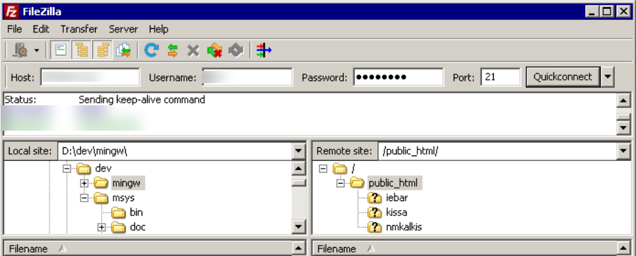

Scenarios
You want to use FTP to transfer files from a local Windows computer to an ECS.
Prerequisites
You have enabled FTP on the target ECS. If you have not enabled FTP, check the following links to know how to set up an FTP site:
Procedure
- Download FileZilla and install it on the local Windows computer.
- On the local Windows computer, open FileZilla, enter the information about the target ECS, and click Quickconnect.
- Host: EIP bound to the ECS
- Username: username set when the FTP site was set up
- Password: password of the username
- Port: FTP access port, which is port 21 by default
Figure 1 Setting connection parameters

- Drag files from the local computer on the left to the target ECS on the right to transfer them.